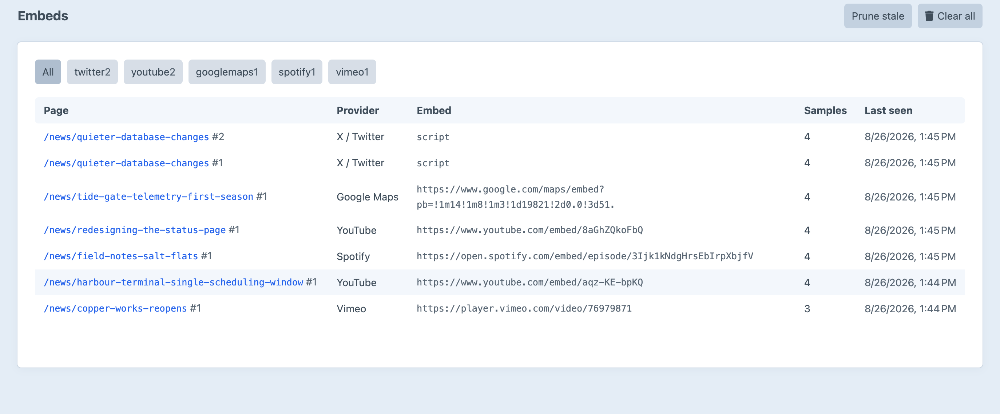
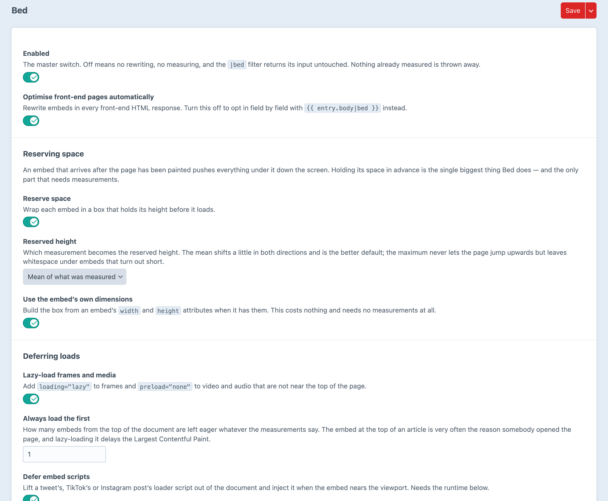

Every embed gets a bed.
Space reserved from real measurements, loading deferred until the embed is wanted, connections warmed only for the ones that aren’t.
A guess that is too big leaves a hole; a guess that is too small still moves the page. So a sampled fraction of visitors beacon back what the embeds settled to at their own viewport width, and every later render reserves that.
An embed is not one height. It is one height per viewport width.
Below the fold, lazy costs a little bandwidth. At the top, it costs the LCP.
A video player is a whole document, spent before anybody has decided to watch.
Recognition buys the ratio, the hints and the facade. Everything else still gets a bed.
A performance plugin that cannot be asked what it did is one you take on faith.
What each page embeds, measured, so the space can be reserved next time.

Reserve space from real measurements, defer scripts, and put a facade in front of YouTube.
